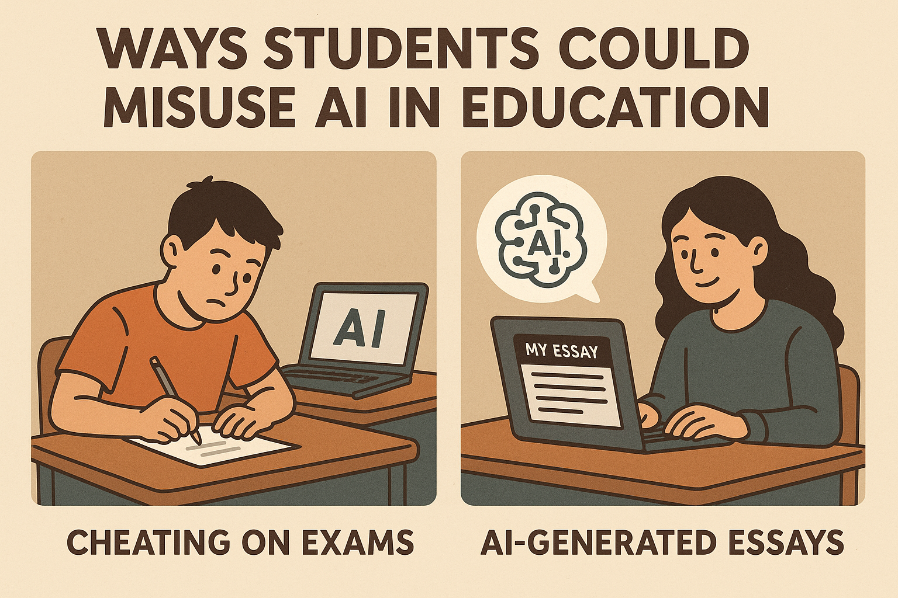
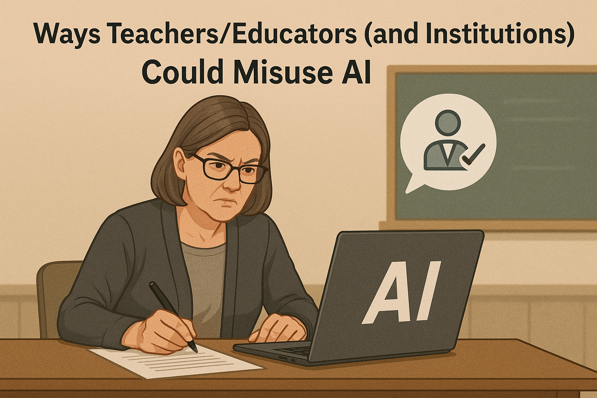

Ways Students Could Misuse AI in Education
- Academic Dishonesty and Plagiarism:
- Submitting AI-Generated Work as Their Own: Using AI tools (like ChatGPT, Claude, Bard, or specialized essay/code generators) to produce essays, reports, code, solutions to problems, presentations, or other assignments and claiming authorship.
- Automated Test/Quiz Taking: Employing AI bots or sophisticated AI tools to answer questions during online assessments, bypassing the need for personal knowledge and understanding.
- Inadequate Paraphrasing and Citation: Using AI paraphrasing tools to superficially rewrite text from sources to avoid direct plagiarism detection, without truly understanding the material or properly citing the original ideas.
- Fabricating Sources or Data: Instructing AI to generate plausible-sounding but fake references, research data, or quotes to support their work.
- Deceptive Use in Collaborative Projects: Using AI to complete their individual contributions to group work without the knowledge or consent of their peers, misrepresenting their effort and learning.
- Bypassing AI Detection Software: Actively seeking out and using techniques or tools designed to make AI-generated content appear human-written to evade detection.
- Circumventing Learning and Skill Development:
- Over-reliance for Instant Answers: Using AI as a constant crutch for immediate solutions, hindering the development of critical thinking, problem-solving skills, and deep understanding of concepts.
- Avoiding Effortful Learning Processes: Skipping essential learning stages like research, drafting, and revision by offloading these tasks to AI.
- Deception and Impersonation:
- Automated Participation (Bots): Using AI bots to post generic comments or participate minimally in online discussion forums or virtual classes to feign engagement.
- AI-Generated Avatars/Voice for Impersonation: (More advanced and less common currently, but a potential future misuse) Using AI to create fake profiles or mimic others in online interactions.
- Creating an Unfair Advantage:
- Access to Sophisticated/Paid AI Tools: Utilizing advanced or subscription-based AI tools that provide a significant advantage over peers who do not have similar access due to financial or other constraints.
- Disruption and Harm:
- Generating Inappropriate or Harmful Content: Using AI to create and distribute offensive, biased, harassing, or misleading content within the educational environment.
- Creating Deepfakes: Generating fake images or videos of peers or educators for malicious purposes like bullying or defamation.
- Spreading Misinformation: Students may use AI to generate and disseminate false or misleading information. This could involve creating fake news articles, crafting convincing but untrue narratives about school events, or generating fabricated quotes from teachers or peers. The intent is to deceive, manipulate opinions, damage reputations, or cause confusion and disruption within the educational setting. AI's ability to produce highly credible text makes this a particularly potent method of misuse.
- Coordinating Disruptive Activities: AI can be used to automate and scale disruptive behaviors. Students might deploy AI-powered bots or scripts to flood online platforms (such as discussion boards, chat rooms, or email inboxes) with spam or irrelevant content, making legitimate communication difficult. AI can also be used to launch coordinated attacks, such as orchestrating multiple accounts to post offensive content simultaneously, disrupt virtual lessons, or create denial-of-service-like effects on school systems. Automation allows a single student or small group to cause widespread chaos.

Ways Teachers/Educators (and Institutions) Could Misuse AI
- Compromising Assessment Integrity and Fairness:
- Over-Reliance on AI Grading Without Oversight: Using AI tools to grade assignments (especially complex ones like essays or projects) without adequate human review, potentially leading to inaccurate, biased, or context-blind assessments.
- Using Biased AI Grading Tools: Implementing AI grading systems that have inherent biases against specific demographic groups, writing styles, dialects, or students with disabilities, resulting in unfair evaluations.
- Lack of Transparency in AI Assessment: Failing to inform students how AI is used in their assessment, what data is collected, and how they can appeal AI-driven decisions.
- Flawed Instruction and Curriculum Development:
- Distributing AI-Generated Content Without Vetting: Using AI to quickly create lesson plans, educational materials, or even exam questions that contain factual errors, outdated information, or biases, without thorough review and correction.
- "Teaching to the Algorithm": Designing curriculum or teaching methodologies primarily to align with what AI tools can easily process or assess, rather than focusing on holistic student development and critical thinking.
- Replacing Human Interaction with AI: Over-relying on AI tutors or chatbots to the detriment of meaningful student-teacher interaction, personalized feedback, and socio-emotional support.

- Violating Student Privacy and Data Mismanagement:
- Implementing Overly Intrusive AI Surveillance: Using AI-powered proctoring or monitoring tools that excessively track students (e.g., constant video/audio recording, biometric data collection, keystroke logging) without clear justification, informed consent, or robust data security measures.
- Mishandling or Misusing Student Data: Collecting sensitive student data through AI platforms and using it for purposes beyond direct educational improvement (e.g., commercial exploitation, undisclosed profiling) or failing to secure it properly.
- Lack of Transparency in Data Practices: Not clearly communicating to students and parents how their data is collected, stored, used, shared, and protected by AI systems used in the classroom.
- Perpetuating Inequity and Accessibility Issues:
- Mandating AI Tools with Unequal Access: Requiring the use of specific AI-powered educational tools or platforms that are not equally accessible to all students due to cost, technology requirements, or disabilities.
- Deploying AI Not Designed for Accessibility: Using AI educational tools that are not compliant with accessibility standards, thereby creating barriers for students with disabilities.
- Eroding Professionalism and Autonomy:
- De-skilling Educators: Implementing AI systems in a way that overly automates pedagogical tasks, reducing the professional judgment, creativity, and autonomy of teachers.
- Making High-Stakes Decisions Solely Based on AI: Using AI-driven analytics for critical decisions about students (e.g., promotion, disciplinary action, learning disability identification) without significant human oversight and contextual understanding.
- Failing to Educate on Ethical AI Use: Not adequately preparing students (or fellow educators) on the ethical implications, responsible use, and limitations of AI technologies.
- Generating Biased Recommendations or Evaluations: Using AI to write student recommendation letters or performance evaluations if the AI itself harbors biases or lacks nuanced understanding.
Video: AI Misuse in Education
Exploring the potential for misuse of AI in educational settings